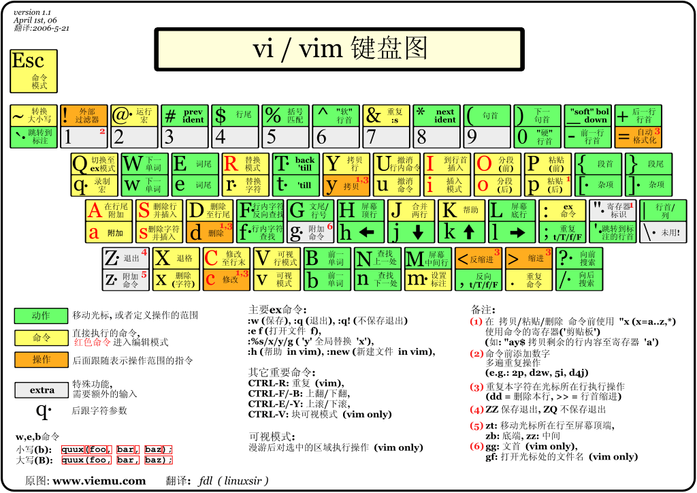

Vim
Why Vim
For now, opinons for the benefits of vim come form CSDIY.wiki
- It keeps your finger on the keyboard throughout the development and moving the cursor without the arrow keys keeps your fingers in the best position for typing.
- Convenient file switching and panel controls allow you to edit multiple files simultaneously or even different locations of the same file.
- Vim's macros can batch repeat operations (e.g. add tabs to multi-lines, etc.)
- Vim is well-suited for Linux servers without GUI. When you connect to a remote server through
ssh, you can only develop from the command line because there is no GUI (of course, many IDEs such as VS Code now providesshplugins to solve this problem). - A rich ecology of plugins gives you the world's most fancy command-line editor.
How to learn Vim
Some basic Vim concepts and usage is on Editors (Vim) Use Vim's own vimtutor to practice.
Keyboard map for vim
